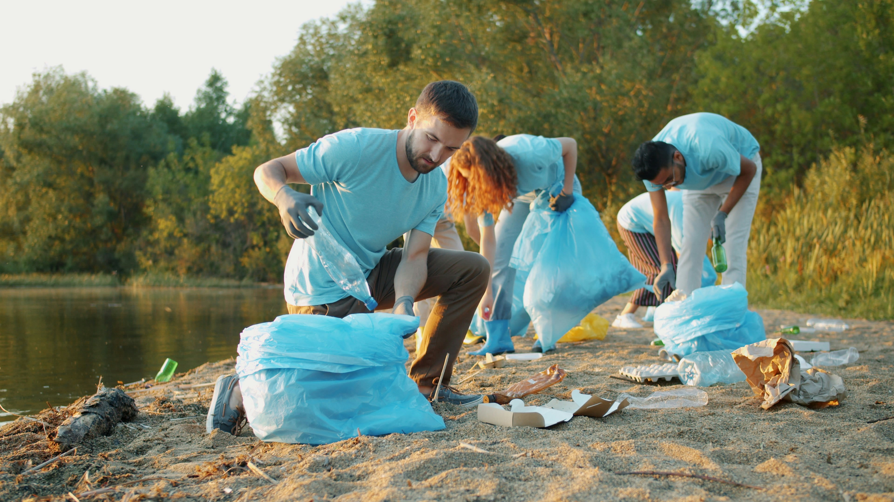

Tentang Abbad Hijau
Abbad Hijau hadir sebagai gerakan yang bukan hanya mengedukasi, tetapi juga merangkul masyarakat untuk merasakan kembali hubungan mendalam antara manusia dan alam. Kami percaya bahwa menjaga lingkungan bukan hanya kewajiban—tetapi sebuah warisan untuk generasi yang akan datang.
Kami telah melangkah dari Sabang hingga Merauke, memasuki sekolah-sekolah, kampung kecil, hingga desa terpencil. Anak-anak, masyarakat, dan para guru menyambut kami dengan harapan yang besar: harapan untuk bumi yang lebih hijau, air yang lebih jernih, dan udara yang lebih bersih.
Bersama masyarakat, kami menanam ribuan pohon, membersihkan sungai yang dulunya penuh sampah, serta menghidupkan kembali desa-desa agar lebih asri. Upaya kecil kami melahirkan perubahan besar—hingga beberapa desa kini menerima apresiasi karena berhasil menerapkan program pelestarian secara konsisten.
0
Pelajar yang telah diedukasi
0
Desa binaan & dibantu
0
Pohon yang berhasil ditanam